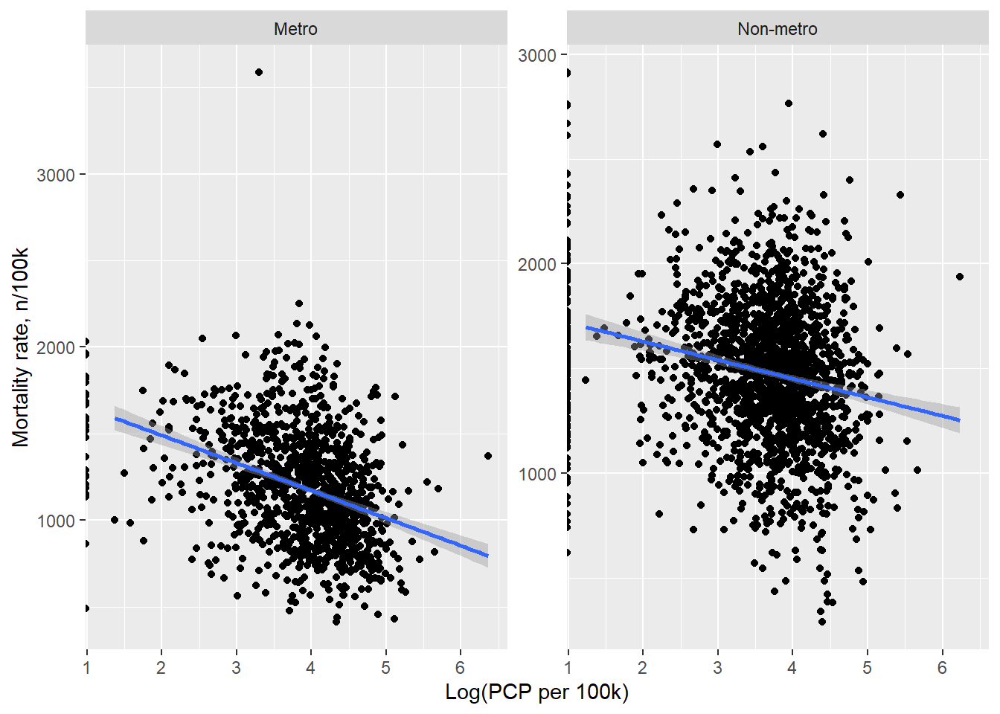

#create a publication-ready table 1descriptive_table<-table1(~ . | metro , data=project[, !(names(project) %in%c("state", "TL_GEO_ID"))],topclass="Rtable1-zebra")#save table in results foldertable1path =here("results","analysis", "table1.rds")saveRDS(descriptive_table, file = table1path)
Create Figure 1 (scatterplot of mortality rate and log(PCP supply))
#scatterplot by metro statusfigure1 <- project %>%ggplot(aes(x =log(pcp_100k), y = Rate2)) +geom_point() +geom_smooth(method ='lm') +facet_wrap(~ metro, scales ="free_y") +xlab("Log(PCP per 100k)") +ylab("Mortality rate, n/100k") # Plot the ggplot objectplot(figure1)
Warning: Combining variables of class <labelled> and <factor> was deprecated in ggplot2
3.4.0.
ℹ Please ensure your variables are compatible before plotting (location:
`join_keys()`)
`geom_smooth()` using formula = 'y ~ x'
Warning: Removed 181 rows containing non-finite outside the scale range
(`stat_smooth()`).

#save figure in result folderfigure1path =here("results","analysis","figure1.png")ggsave(filename = figure1path, plot=figure1)
Saving 7 x 5 in image
`geom_smooth()` using formula = 'y ~ x'
Warning: Removed 181 rows containing non-finite outside the scale range
(`stat_smooth()`).
Calculate Intra-class correlation(ICC) from the unconditional means model to decide whether a multi-level linear model with random intercepts for states is necessary.
#fit an unconditional means model with random intercepts for statesfit0<-lmer(Rate2 ~1+ (1| state), data=project)#calculate ICCVarCorr(fit0)
Groups Name Std.Dev.
state (Intercept) 183.73
Residual 334.16
ICC=0.232. This indicates 23.2% of total variance in county-level mortality rates is attributable to between state variation, and the rest of the 76.8% is attributable to the within-state variation. A multilevel linear model with random intercepts for states is preferred to analysis the association between mortality rates and PCP supply.
Fit bivariate multilevel models with mortality rate as the outcome
Since distribution of PCP supply is highly skewed, we need to log transform it. PCP supply will be in the form of log(pcp_100k+0.01). Adding 0.01 to the PCP supply value for each county is because some counties have 0 PCP supply and cannot be log transformed.